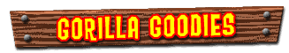
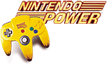
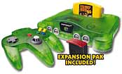
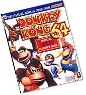

|  |
|
Jungle Pak Nintendo Power Magazine is proud to present this apeeling Limited Edition Donkey Kong 64 Banana Bunch Controller. The only way you can get it is by subscribing to Nintendo Power Magazine, so there has never been a better time to throw your bananas on the table and get a subscription. For a short time, you can receive a Banana Bunch Controller (shown here), a 12-month subscription to Nintendo Power, and an Official Donkey Kong 64 Player's Guide for only $40! The best part about the Banana Bunch Controller? It doesn't attract fruit flies! To order call 1-800-255-3700, and tell the operator you want the Jungle Pak (offer #3283)! Click here to order online! Offer expires 12/31/99  N64 Jungle Bundle Set In celebration of Donkey Kong 64, Nintendo is offering a special Jungle Bundle set that includes a Donkey Kong 64 Game Pak, a brand new Jungle Green N64 console system, a Jungle Green Controller and an N64 Expansion Pak.  Player's Guide Donkey Kong 64 is so massive, you'll blow your brain cells if you try conquer it alone. If you want to find 101% of the items in the game, it doesn't hurt to have a little help (your brain will thank you). Nintendo's Official Donkey Kong 64 Player's Guide can give you the guidance you need to find all 201 Golden Bananas, overthrow King K. Rool, and still be able to feel your brain afterwards. With detailed maps of all eight levels, multiplayer tactics and the inside scoop on all the cheats, the official gorilla guide from Nintendo Power Magazine is King K. Rool's worst nightmare! Click here to purchase the Donkey Kong 64 Player's Guide online, or pick one up at your favorite video game retailer. |